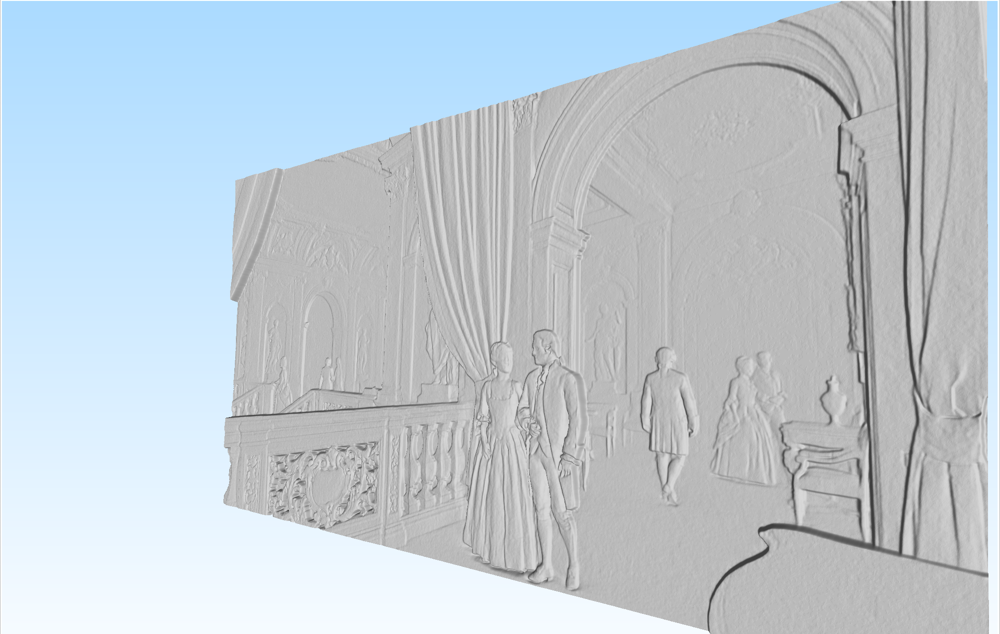
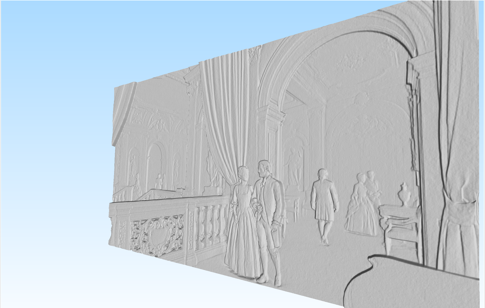

green-coffee-buying
Green (unroasted) coffee buying should be modeled as a search problem, but it isn’t.
It’s treated as a relationship-based procurement exercise with brand and origin
reputation serving as proxies for future quality. In reality, year-to-year variation
in cup score is driven by a non-stationary, multi-factor system with weak persistence.
The quality-generating function is underdetermined and non-stationary, with far more
latent variables than observable constraints, which produces stochastic and occasionally
chaotic year-to-year outcomes. A corrected strategy runs on an explore-then-exploit
loop. In the exploration phase, conduct a normalized random sampling across the global
production space - normalizing for farm and mill count to avoid over-representing high
density origins. In the exploitation phase, allocate sample roasting and cupping
bandwidth to the high-signal clusters that emerge from this first pass. The net effect
is that buyers cup less but discover more: instead of chasing historical reputation,
they chase emergent quality. This reduces the required cupping hours, reduces the
premium paid for expected quality, and increases the likelihood of finding undervalued
coffees. The result is higher cup scores at lower cost.
surfex Active Startup Endeavor
Most brand websites talk endlessly about themselves, but almost none answer questions.
Yet, answering is what visitors actually want. When people evaluate a product, they
don’t want slogans or brand mythologies; they want clarity, resolution, and reasons to
trust. The modern web is visually rich but cognitively limited: visitors can look and
click, but they cannot ask. Asking is how humans resolve uncertainty, test fit, and
move toward a purchase. SurfEX produces this missing modality by letting visitors query
the product the way they would query a salesperson, and then dynamically surfacing the
most relevant content - founder videos, demos, FAQs, explainer text, and social proof.
The emerging interface of digital experience is not static pages that users must
explore inefficiently; it’s a hybrid of search and conversation. SurfEX embraces that
shift as a full-page experience, not as a timid chat bubble in the corner. You don’t
tiptoe into new interfaces - you leap. Radical changes in user behavior require radical
changes in interface. The result is higher trust density per unit time, which is the
scarce resource in digital sales - and more revenue from the traffic you already have.
simulate
Training generalized, adaptable intelligence may require full world simulation -
allowing “evolution” to occur digitally. To this end, you don’t need to simulate this
reality - you just need to simulate a reality.
3d-engraving
 

It occurred to me that with current-gen AI, you can generate any image as a depth map,
like a LiDAR scan. This enables a subsequent Python script to use that luminosity depth
map as a basis for modeling the tool path of different sized tool tips of a 3-axis CNC
router, creating a realistic, production ready 3d file.
spurious-correlation
True relationship with AI characters will require the invention of a technology which
generates, updates, and otherwise maintains or engineers fully coherent, world-aligned
backstories and memory access modeling.
3d-ramp
One weekend, I designed and built a web application that faithfully reproduces a 3d
model of commercially available wheelchair ramp that I sell in my day job. It creates
this from a set of numerical dimensions, allowing any design to be generated on the
fly, procedurally, from raw geometry down to the smallest detail.